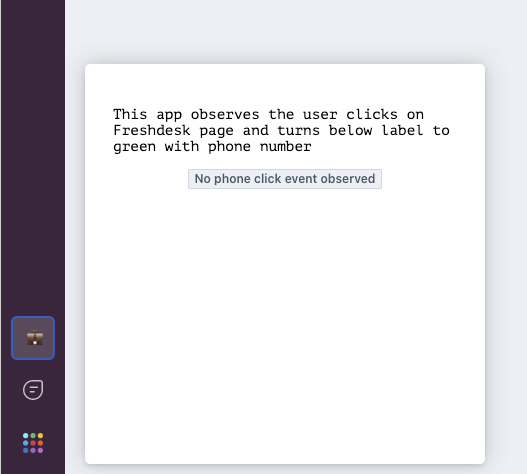
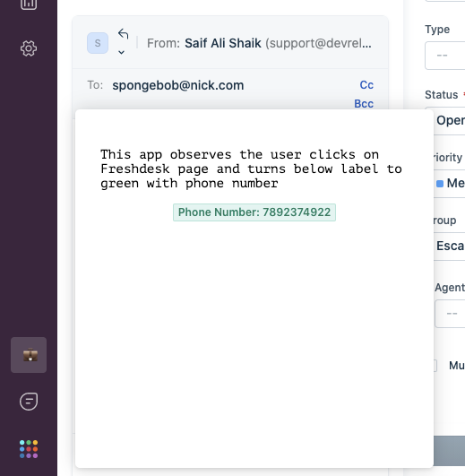
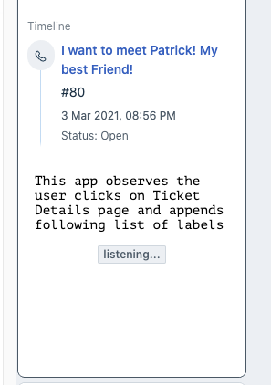
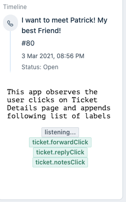
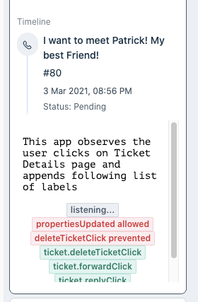
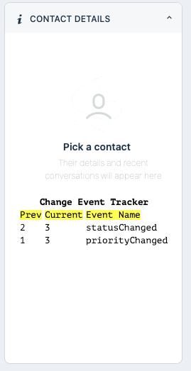

Events Method allows an App to know events happening in the Freshdesk UI and respond as needed. Let's learn about how you can consume them to power your next app.
You will explore this feature by writing some simple code to capture a few UI events in a few app placeholders and explore writing code yourself.
Let's start learning about events methods by going ahead and downloading sample code. It contains everything you need to just focus on learning and understanding events methods.
Current tutorial is an App running on Freshdesk.
git clone https://github.com/freshworks-developers/events-methods-freshdesk.git
Or you can also
> fdk runlocalhost:10001After you open the source code, a bunch of HTML, CSS and JS files can be found. These are essentially web pages rendered in 3 app placeholders.
You can observe events that occur in the Freshdesk UI and register a callback with events methods.
client.events.on("<argument>", callback[,options]) - takes in a callback which will be invoked when desired event occured.
Events method can observe 3 types of events
Register a callback (defined by you) when a user clicks a button or dropdown on Freshdesk UI.
Let's see this in action. Run the following command in the Terminal.
❯ fdk run
Starting local testing server at http://*:10001/
Append 'dev=true' to your Freshdesk account URL to start testing
e.g. https://domain.freshdesk.com/a/tickets/1?dev=true
Quit the server with Control-C.
Freshworks CLI serves your app to the browser on port :10001. In the Freshdesk account, append the URL with ?dev=true to find the app running on the global sidebar at CTI app location.

At this step, the app simply renders some text and a label.
Let's go ahead and and write code to use events method inside of phoneClickListener callback function in cti.js as follows:
client.events.on('cti.triggerDialer', function renderPhoneNumber(event) {
const { number } = event.helper.getData();
const label = document.querySelector('.spotlight');
label.setAttribute('value', `Phone Number: ${number}`);
label.setAttribute('color', `green`);
});
See what is happening,
cti.triggerDialer argument is passed to this method along with a named function renderPhoneNumberrenderPhoneNumberpicks up the phone number on which the user has clicked and renders to the app's UI.The eventargument is available within the callback function.event.helper.getData()returns the phone number in a JS Object with the phone number needed for the app.Open the any ticket details page, and click a phone number in a widget named contact details. As soon as the phone number is clicked, the app can access the same phone number. Do not forget to append ?dev=true query parameter to the URL to load the locally run app.

The argument cti.triggerDialer is globally available to be passed to events method across the placeholders. However, there are more. See click events in Ticket Details Page.
On the same ticket details page, you might have noticed an app rendered in ticket_requester_info placeholder.

Let's keep going to observe more events in the ticket details page.
Open tkt_req_info.js and start writing following code in eventsInTktDetailsPage:
const spotlight = document.querySelector('.spotlight');
let clickEvents = [
'ticket.replyClick',
'ticket.sendReply',
'ticket.forwardClick',
'ticket.conversationForward',
'ticket.forward',
'ticket.notesClick',
'ticket.addNote',
'ticket.closeTicketClick',
'ticket.deleteTicketClick',
'ticket.previousTicketClick',
'ticket.nextTicketClick',
'ticket.startTimer',
'ticket.stopTimer',
'ticket.updateTimer',
'ticket.deleteTimer'
];
clickEvents.forEach(function register(click) {
client.events.on(click, function writeToDOM(event) {
spotlight.insertAdjacentHTML('afterend', `<fw-label value="${click}" color="green"></fw-label>`);
});
});
Let's understand what above code does,
cti.triggerdailer as an argument to register a callback. Similarly, above code registers all the ticket click events to single callback.clickEvents holds all the arguments.writeToDOM(event){..} callback which appends a label on the UI.
Pat yourself for reaching this point! If you are stuck somewhere, you can get back on track by switching click-events branch!
Let's keep going.
Now that you know how to observe the click events, the app can also decide to allow or prevent that event from happening. For example, on certain conditions the app might prevent the ticket being closed.
Head totkt_req_info.js and add the follow code:
let interceptEvents = {
prevent: ['ticket.closeTicketClick', 'ticket.deleteTicketClick'],
allow: ['ticket.propertiesUpdated', 'ticket.sendReply']
};
interceptEvents['prevent'].forEach(function registerCb(click) {
client.events.on(click, preventClickEvent, { intercept: true });
function preventClickEvent(event) {
let eventName = event.type;
const row = `<fw-label value="${eventName.slice(7)} prevented" color="red"></fw-label>`;
spotlight.insertAdjacentHTML('afterend', row);
}
});
interceptEvents['allow'].forEach(function registerCb(click) {
client.events.on(click, allowClickEvents);
function allowClickEvents(event) {
let eventName = event.type;
const row = `<fw-label value="${eventName.slice(7)} allowed" color="red"></fw-label>`;
spotlight.insertAdjacentHTML('afterend', row);
event.helper.done();
}
});
{intercept: true} is passed as an argument.preventClickEventevent.type.It returns the which click event just happened in the registerCb(event){..} ‘s execution context. In other words, that's how your callback would know which event caused it to be invoked.event.helper.done() decides the current event should continue. In this case, appending allowed labels to the UI.event.type you can allow the original event to continue or prevent the original event from happening.On playing around changing some properties and trying out those events, you'll see tags appended.

See the source code at this step!
On Freshdesk users change the status, priority, group and so on _frequently. App can also observe those events and let the callback function you pass know old and new values for a given ticket property. For example, _priority _was _low _earlier and now the app may want to update it to _urgent.
Let's look at another placeholder of the app that renders in the New Ticket Page. Don't forget to append ?dev=true in the URL within New Ticket Page.
Open, new_tkt_req_info.jsand write the following code within registerChangeEvents(){..}
const spotlight = document.querySelector('.spotlight');
let changeEvents = [
'ticket.priorityChanged',
'ticket.statusChanged',
'ticket.groupChanged',
'ticket.agentChanged',
'ticket.typeChanged'
];
changeEvents.forEach(function register(click) {
client.events.on(click, function writeToDOM(event) {
let eventName = event.type;
let { old: prevVal, new: newVal } = event.helper.getData();
const row = `
<tr>
<td>${prevVal}</td>
<td>${newVal}</td>
<td>${eventName.slice(7)}</td>
</tr>
`;
spotlight.insertAdjacentHTML('beforeend', row);
});
});
event.helper.getData();which returns JS object with old and new as properties.writeToDOM(event){..} callback function simply writes this information to the UI.
By this time you've finished building your app. Switch to the change-events branch to see the milestone at this point.
The Events Methods can be invoked specific to the placeholders. See documentation for specific details.
You've finished the tutorial and walked thoughtfully through working of the Events Method. Great Job! Start using this feature in your apps right away!